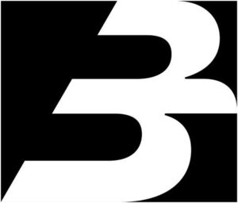

Trade Mark Journal No.2025/030 25 July 2025
WO0000001864169 (9,16,35,36,38,42,45)
Office of origin: Italy
Date of International Registration:20 February 2025
Date of designation in the UK:
20 February 2025

International priority date claimed: 31 January 2025
(Italy)
(302025000016209)
- Class 9
- Card reading equipment; wide area networks; computer software for Global Positioning Systems; GPS receivers; Global Positioning System [GPS] apparatus; software for GPS navigation systems; GPS transmitters; computer communication software to allow customers to access bank account information and transact bank business; software for satellite navigation systems; communications servers [computer hardware]; hardware; WAN [wide area network] hardware; data loggers; communication software for connecting global computer networks; computer software for wireless network communications; scientific apparatus and instruments; computer software applications, downloadable; application software for mobile phones; computer software programs for database management; computer software to enable the searching of data; computer software for database management; computer software for controlling self-service terminals; application software for mobile devices; personal computer application software for document control systems; personal computer application software for managing document control systems; encoded credit cards; magnetic credit cards; magnetically encoded credit cards; credit card terminals; card readers for credit cards; credit card encoding machines; automated teller machines [ATM]; automatic paying-in and deposit machines; automated bank note sorting machines; data switching apparatus; electronic payment terminals; encoding and decoding apparatus and instruments; apparatus for electronic payment processing; computer software for use in providing multiple user access to a global computer information network; computer software for controlling and managing access server applications; electronic publications, downloadable; encoded integrated circuit cards; encoded cards; magnetically encoded charge cards; encoded magnetic cards; encoded prepaid payment cards; encoded electronic chip cards; computer e-commerce software to allow users to perform electronic business transactions via a global computer network; software; computer hardware; software programs for computer; secure terminals for electronic transactions; software for mobile phones; e-commerce and e-payment software.
- Class 16
- Credit cards without magnetic coding; debit cards without magnetic coding; pre-paid purchase cards, not magnetically encoded; paper passe-partouts; paper badges; paper loyalty cards; banknotes; money clips; money holders; metal money clips; cheques; holders for cheque books; cheque books; checkbook cases; check book holders; coin wrappers; trays for sorting and counting money; money clips of precious metals.
- Class 35
- Advertising; dissemination of advertisements; development of advertising concepts; marketing research; business enquiries and investigations; market studies; business surveys; conducting of business research; data search in computer files for others; analysis of business information; collecting information for business; business information; business consultancy and advisory services; assistance to commercial enterprises in the management of their business; provision of commercial information; collection of commercial information; compilation of statistical information; providing information about commercial business and commercial information via the global computer network; systemization of information into computer databases; pay per click advertising; statistical analysis and reporting; preparation and compilation of business and commercial reports and information; cost price analysis; cost benefit analysis; market study and analysis of market studies; economic forecasting and analysis; compilation of information into computer databases; systematization of information into computer databases; compilation and systematisation of information in databanks; advice on tax preparation; bookkeeping for electronic funds transfer; administrative processing of computerized purchase orders; administrative processing of purchase orders placed by telephone or computer; compilation of statistics; provision of business and commercial contact information via the Internet; providing consumer product information via the Internet; provision of information and advisory services relating to e-commerce; compilation and input of information into computer databases; market research; economic information services for business purposes; promotion of financial and insurance services, on behalf of third parties; promoting the sale of goods and services of others by awarding purchase points for credit card use; consumer research.
- Class 36
- Processing payments for the purchase of goods and services via an electronic communications network; rental of cash dispensers or automated-teller machines; electronic processing of payments; processing of electronic payments; payment transaction card services; processing of payment transactions via the Internet; conducting cashless payment transactions; conducting of financial transactions on-line; conducting of capital market transactions; financial transfers and transactions, and payment services; electronic credit card transactions; bank card, credit card, debit card and electronic payment card services; automated teller machine [ATM] banking services; online business banking services; providing information relating to the rental of cash dispensers or automated teller machines; credit card and debit card services; processing of debit card payments; processing of electronic check payments; financial consultancy relating to the execution of cashless payment transactions; issuing stored value cards; issuance of credit cards; automated banking services; electronic banking services; Internet banking; automatic cash dispensing services; providing on-line investment account information; providing financial information on-line; electronic banking via a global computer network [internet banking]; automated teller machine [ATM] services; credit services; insurance services; finance services; banking; financing services; telephone banking services; banking services relating to the deposit of money; debt collection agency services; provision of consumer credit; monetary affairs; financial affairs; on-line bill payment services; bill payment services; cash, check (cheque) and money order services; cheque encashment services; issuing of cheques; financial transaction services; issuing tokens of value as a reward for customer loyalty; financial intermediary services; on-line real-time currency trading; providing financial information via a web site; rental of automated teller machines [ATM]; payment services provided via wireless telecommunications apparatus and devices.
- Class 38
- Telecommunication services; communications services; provision of access to data on communication networks; providing telecommunications connections to a global communication network or databases; transmission of data and information by computer and electronic communication means; mobile telephone communication services; on-line communication services; Internet communication; providing access to data in computer networks; providing of access to computer databases; providing user access to global computer networks; electronic data interchange services; providing user access to the internet (services providers); providing high speed access to computer and communication networks; providing access to databases; providing access to telecommunication networks; transfer of information and data via online services and the Internet; communication services by satellite; providing telecommunications connections to the internet or databases; providing information relating to wireless communication; telecommunications services, namely, personal communication services; communication via virtual private networks; electronic mail services; electronic transmission of data and documents via computer terminals; electronic transmission of messages; sending and receiving of electronic messages; transmission of electronic mail; electronic transmission of computer programs via the internet; transmission of data by electronic means; transmission and reception [transmission] of database information via the telecommunication network; providing telecommunications connections to databases; providing access to e-commerce platforms on the Internet; electronic communications services relating to credit card authorization.
- Class 42
- Data migration services; design of computer databases; database design and development; data encryption services; decoding of data; data encryption and decoding services; electronic data storage and data back-up services; computer services concerning electronic data storage; software engineering services for data processing programs; computer programming services for data warehousing; updating of software for communication systems; data mining; software development; design and development of data processing software; testing, analysis and evaluation of the goods and services of others for the purpose of certification; website usability testing services; testing of computer hardware; testing of computer software; technical consultancy relating to the application and use of computer software; development and testing of computing methods, algorithms and software; testing, analysis and monitoring of navigation signals; testing, analysis and monitoring of telecommunication signals; design and development of computer software for evaluation and calculation of data; analysis of telecommunication signals; research in the field of mobile payment technology; software as a service [SaaS]; artificial intelligence consultancy; platforms for artificial intelligence as software as a service [SaaS].
- Class 45
- Legal assistance in the drawing up of contracts; licensing of databases; legal advice; legal compliance auditing; legal services relating to licences; legal advocacy services; legal conveyancing; legal research relating to business mergers; legal advice in responding to calls for tenders; expert consultancy relating to legal issues; providing information about legal services via a website; legal services in relation to the negotiation of contracts for others; safety evaluation; monitoring of security systems; security marking of documents; legal services in the field of data security; detective investigation; detective services; personal background investigations; legal investigation services; reviewing standards and practices to assure compliance with laws and regulations; providing authentication of personal identification information [identification verification services]; legal consultation in the field of taxation; physical security consultancy; providing background check services; information services relating to trading standards; identity validation services; information services relating to safety; information services relating to consumer rights; legal services; legal mediation services; legal research in the field of economic policy; litigation services; guardianship services; notarial services; legal watching services; solicitors' services.
BANCOMAT S.P.A.
Representative: JACOBACCI & PARTNERS S.P.A., Corso Emilia 8, I-10152 Torino, ITALY